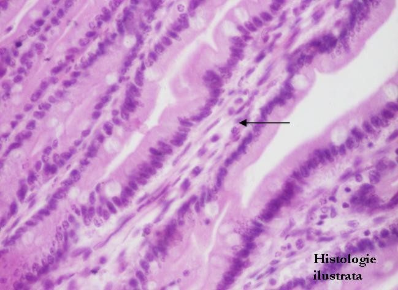
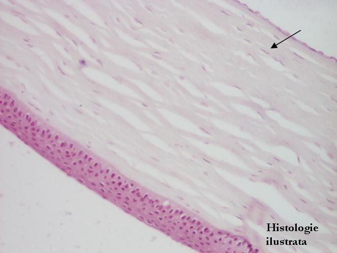

Cap.2 - Ţesutul conjunctiv
2.2. Varietăţi de ţesut conjunctiv
Ţesutul conjunctiv propriu-zis




Fig. 80 - Ţesut conjunctiv lax – submucoasa esofagului, H.E. X 100
Fig. 81- Corion de apărare – vilozităţi intestinale, jejun, H.E. X 100
Fig. 82 - Corion de apărare – jejun,
H.E. X 400
Fig. 83 - Corion citogen – endometru, H.E. X 200


Fig. 84 - Corion citogen – endometru, H.E. X 400
Fig. 85 - Ţesut conjunctiv lax şi dens semiordonat – dermul pielii, H.E. X 100
Fig. 86 - Ţesut conjunctiv dens semiordonat – dermul profund al pielii,
T.S. X 100
Fig. 87 - Ţesut conjunctiv dens ordonat – tendon,
T.S. X 200

Fig. 88 - Ţesut conjunctiv dens ordonat – cornee,
H.E. X 100